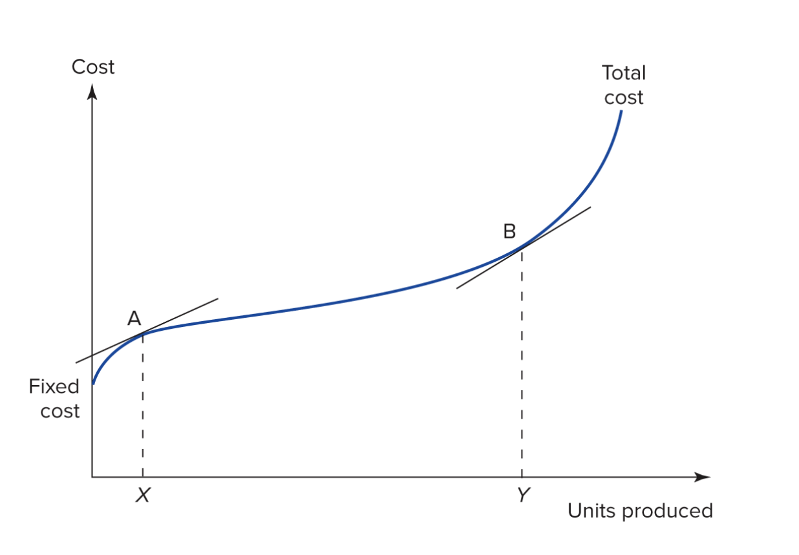

Lecture 12: Midterm Review
HKUST School of Business and Management
Roadmap for Lecture 12
- Exam Details and Format.
- Lecture Overviews (1-5).
- Specific Questions.
- Open Questions.
Exam Details and Format
Exam Details
- Time: 8:00 PM to 9:00 PM (2000-2100)
- Date: Tuesday, 18 March 2025
- Location: LTC and LTD (room assignments will be posted on Canvas)
- We will arrange a separate room for students with conflicting exams. Please contact us if you have a conflict.
- The midterm is only 18% of your grade, and is intended to be a preparation exercise for the final exam.
Exam Format
- You have up to one hour for this exam. (~45 minutes average)
- This exam has five numbered sections worth 30 points per section.
- We will only consider your best four sections, and the maximum number of points possible will be 120.
- You may skip one section without penalty.
- Read each question carefully. These questions come from the homework and lectures, please review them carefully as the questions have been modified to the constraints of the exam.
- Closed book (means no external support beyond writing materials)
Question Format:
- One section is multiple choice.
- i.e. ‘MC’ can be 25% if you choose.
- The remainder of the exam will be short answer questions. For example:
- “What is the marginal cost function for product \(q_1\) at firm 3? A simple formula, or “does not exist” is sufficient.”
- “The terms marginal cost and incremental cost are often used interchangeably, please briefly explain how these terms differ, and when this difference is likely to matter. Two or three sentences will suffice.”
- “Explain to Trevor how to create a plot of this data using the tool of your choosing (i.e. the tool you used for this assignment–Python, Excel, R, etc.). Please outline the steps he needs take in the space provided. The names of the commands do not have to be precise, and you can assume that he has this tool installed and has a basic understanding of how to use it.”
- I will not ask you open-ended questions.
Lecture Overviews
- Lecture 1: Introduction to the Course
- Lecture 2: The Nature of Costs (Cost Functions)
- Lecture 3: Cost Estimation
- Lecture 4: Non-linear Programs (Optimization I)
- Lecture 5: Linear Programs (Optimization II)
- Lecture 6: Review of the ‘Tools’ portion of the course.
- Lecture 7: Capital Budgeting/Time Value of Money
- Lecture 8: Taxation of Returns
- Lecture 9: Tax Shields
There are only 3 new lectures for this review session.
Lecture 1: Introduction to the Course
This lecture serves as motivation for the course as a whole, and underpins my approach to the course. There are two key points that you should retain.
Lecture 1: Key Point 1 - The Role of Data in Management Accounting
- Review Zimmerman’s view of management accounting with attention to the role of data collection, management, and analysis. (esp. the quoted sections)
Lecture 1: Key Point 2 - The Location of Management Accounting within the VSM
- Review the viable systems model (basic idea of the 5 systems), the concept of a resource bargin, and the location of the management accountant within the VSM.
Lecture 1: Key Point 2 - The Location of Management Accounting within the VSM
Immediate and internal systems:
- System 1: Operational units that perform primary activities
- System 2: Coordination mechanisms that resolve conflicts between operational units
- System 3: Internal regulation, resource allocation, performance monitoring
Future-oriented and external systems:
- System 4: Intelligence functions dealing with the external environment and future planning
- System 5: Policy and identity, setting overall direction and purpose
Management accounting is the interface between the immediate and future-oriented systems
Lecture 2:
The Nature of Costs (Cost Functions)
Are you comfortable manipulating cost functions?
- Can you derive an average cost function from a total cost function?
- Can you derive a marginal cost function from a total cost function?
- Can you deive an incremental cost function from a total cost function?
- Can you explain when 2 & 3 are different, and when that matters?
- Do you understand how real operations are likely to differ from the simple linear approximations used in introductory textbooks?
Quick Review of Derivatives
1. The derivative of \(x^n\) is \(nx^{n-1}\)
- Remember that \(x^1\) is \(x\) and \(x^0\) is 1.
2. The other variables are constants
- So, the derivative of \(yx^n\) is \(nyx^{n-1}\)
3. The derivative of a constant is 0.
Videos:
Lecture 2: Manipulating Cost Functions
Marginal Cost and Incremental Cost:
- These terms are equivalent
- When the cost curve is linear,
- When a linear approximation is appropriate (i.e. useful),
- and the terms are often used interchangeably.
- You should clarify in cases where the difference matters (i.e. if the two are meaningfully different).
- The exam question will be a version of P1.1 and will not treat the two as interchangeable. I.e. on the exam MC \(\neq\) IC.
Why am I emphasizing this?
Supplemental Slide
In introductory microeconomics marginal cost is often defined as the incremental cost, but in advanced classes this difference is important. For example:
- Microeconomics (6e) Perloff, page 190: “A firm’s marginal cost (MC) is the amount by which a firm’s cost changes if the firm produces one more unit of output.”1
- Microeconomics (8e) Pindyck & Rubinfeld, page 237: “Marginal cost, sometimes called incremental cost, is the increase in cost that results from producing one extra unit of output.”
- Principles of Economics (4e) Mankiw, page 276: “Marginal cost tells us the increase in total cost that arises from producing an additional unit of output.”
- Economics (14e) Samuelson & Nordhaus, page 733: “The extra cost (or the increase in total cost) required to produce 1 extra unit of output (or the reduction in total cost from producing 1 unit less).”
Why am I emphasizing this?
The role of marginal cost in microeconomic theory depends on the mathematical attributes of the derivative of the cost function, attributes which the incremental cost only shares when the two are interchangeable.
- Price theory.
- Aggregation to macroeconomic theory.
- Monopoly definition and pricing.
Particularly important when ‘increments’ are large (e.g. aircraft) or hard to define (e.g. social media).
Average Cost (AC):
Total Cost of producing the output over the number of units of output.
- This is a simple average for single-product firms.
- Average cost is only defined in multi-product firms when the cost function is separable. That is when there is no interaction between the production of products within the firm. The production processes cannot:
- Interfere with each other,
- Share capital,
- Exhibit any synergy.
Average Cost (AC):
- Synergy is the reason why products are grouped within firms, and grouping products within firms is costly so it is unlikely that AC is ever useful in practice.
- This is at odds with the common use of the concept of average total cost in microeconomic theory, where the decision to enter or exit a product market is made based on expected average total cost.
The Real World vs. the Linear World
- Do you understand how real operations are likely to differ from the simple linear approximations used in introductory textbooks?
A simple example where everything is linear:

Linear Approximation
Can you see anything unrealistic in this graph?
Most firms’ costs are non-linear
Non-linear Version
Economic Significance: i.e. what does the graph represent?
- What is the economic significance of the area to the left of the line from X to A?
- Production below the intended/efficient scale of the firm.
- What is the economic significance of the area between X->A and Y->B?
- Production at the intended/efficient scale of the firm.
- What is the economic significance of the area to the right of Y->B?
- Production above the intended/efficient scale of the firm.
Lecture 3: Cost Estimation
Lecture 3 Topics:
- Data Analysis Workflow.
- Bad (esp. Missing) Data.
- How to plot, estimate, and interpret. (basic steps)
Data Analysis Workflow.
- Obtain data.
- Plot data.
- Model data and evaluate.
- Interpret data.
1. Obtain data.
- The data you gather should be informed by the question you are asking, if you are modeling cost then you should consider the input of those who designed the products as processes as well as those who conduct them.
- The model you intend to fit is implicit in this step. If you think x causes y you will collect measures of x and y.
2. Plot data.
- This should be a test of your intuition, and the quality of the data.
3. Model data and evaluate.
- Start with simple functional forms (i.e. linear regression).
- Evaluate fit by plotting data and the model, as well as formal statistical tests.
4. Interpret data.
- What does the estimated relationship mean?
- Does it make sense? Is it physically possible?
- What is the level of uncertainty inherent in the data? This is both what you see in the graph and what you know about the data generating process.
Bad (esp. Missing) Data.
- The handling of missing data is critical. Always ask whether a missing value is a 0 (e.g. R&D is not reported if none occurred) or should be thrown out.
- More generally, it is important to think through how the data are translated from the real world into rows in your dataset.
How to plot, estimate, and interpret. (basic steps)
- Can you explain the steps to create a plot of a dataset using Excel or Python (or something else)?
- The names of the commands do not need to be precise, you can assume that the tool has been set up and that the person you are explaining it to has a general knowledge of the tools.
Links to Relevant Slides and Examples:
Lecture 4: Non-linear Programs - Optimization I)
Lecture 4 Topics
- Optimization Workflow.
- What does it mean for a constraint to ‘bind’?
Optimization Workflow
- Identify the choice variables.
- Keep in mind that the constraints may limit the choice variables.
- Be explicit about any natural constraints (e.g. \(q>0\)).
- Include initial values (guesses) if required.
- Write out the objective function.
- Make any substitutions.
- Note whether the objective is to maximize or minimize the function.
- Write out the constraints.
- These will be equations with more than one variable.
- Single variable constraints will be reported with the choice variables.
- Solve.
- This will be done with a solver (gekko, excel) in practice.
- You will not be asked to take this final step on the exam.
Optimization workflow:
- Can you explain the steps solve an optimization problem using Excel or Python (or something else)?
- The names of the commands do not need to be precise, you can assume that the tool has been set up and that the person you are explaining it to has a general knowledge of the tools.
What does it mean for a constraint to ‘bind’?
- In the case of a profit function a binding constraint prevents the firm from earning more profit.
- When a constraint binds, the optimal production plan will include choices equal to the constraint.
Links to slides and examples.
Note that lectures 4 & 5 both have examples of the optimization workflow.
- Step 1. Choice Variables (linear example)
- Step 1. Choice Variables (non-linear example)
- Step 2. Objective Function (linear example)
- Step 2. Objective Function (non-linear example)
- Step 3. Constraints (Linear example)
- Step 3. Constraints (non-linear example): Note that there are no remaining multivariate constraints!
- Step 4. Solve (Linear example)
- Again, you do not have to do this by hand.
- Can you explain the steps to solve this problem in Excel or Python?
- …like seriously, can you explain this to someone else? If you are not sure, find someone to explain it to. Did they get the output you expected?
- Excel Examples
Lecture 5: Linear Programs (Optimization II)
Lecture 5:
- Shadow prices.
- Framing of the marginal cost.
Shadow prices.
For a given objective function and constraint, the shadow price on the constraint is the rate at which the value of the objective function changes as the constraint is relaxed. You may have heard this referred to as a Legrange multiplier (\(\Lambda\)) in math and econ where we are interested in it’s infinitesimal properties; however, in our case we are most interested in it’s value over specific intervals. I.e. what is the predicted benefit of purchasing 1500 more machines? Increasing a budget by $100,000,000?
Framing of the marginal cost.
In P5 we have:
- Revenue: \(R=40x+42y\)
- Cost: \(C=30x+30y\)
- Profit: \(\Pi = 10x + 12y\)
What is the marginal cost of \(x\) based on this information?
\(\frac{\delta C}{\delta x}=30\)
This the marginal cost in the direct sense that you will have to obtain $30 of resources that you do not have in order to produce 1 unit of \(x\)
Is $30 all you give up to produce one more unit of \(x\)?
No. Because the amount of \(y\) you produce depends on \(x\), so we are also giving up $2 per unit of \(y\) that is displaced.
Tax Terms
- These will be covered with multiple choice questions.
- The focus here is on terminology, not calculations, and this portion of the exam will be easy.
Full list of terms:
- Assets, investments, and projects all have different pre-tax returns (\(r\)).
- Tax rates \(t\) vary across individuals, jurisdictions, organizations, and assets.
- pre-tax returns \(r\) correspond to post tax returns \(r(1-t)\)
- When preferential tax treatment increases demand for a tax favored asset it’s price increases. This price change is an implicit tax.
- When tax payers use organizational forms like pensions and insurance policies to avoid taxes it is called organizational form arbitrage.
- When high-tax tax payers issue taxable debt to finance the purchase of tax free debt (e.g. municipal bonds in the US) issued by low-tax tax payers (e.g. US non-profit universities) it is called clientele arbitrage.
- The depreciation tax shield is the present value of the reduction in tax payments afforded by the depreciation deduction.
- The value of the tax shield \(TS\) is a function of the investment \(x\), the risk-free rate of return \(r\), the tax rate \(t\), and the depreciation rate \(d\). \[TS=f(x,t,d,r)\]
- \(TS\) is increasing in both \(d\) and \(t\).
Basics of Time Value and Taxes:
- Assets, investments, and projects all have different pre-tax returns (\(r\)).
- Tax rates \(t\) vary across individuals, jurisdictions, organizations, and assets.
- pre-tax returns \(r\) correspond to post tax returns \(r(1-t)\)
Implicit Taxes:
- When preferential tax treatment increases demand for a tax favored asset it’s price increases. This price change is an implicit tax.
Org. Form Arbitrage:
- When tax payers use organizational forms like pensions and insurance policies to avoid taxes it is called organizational form arbitrage.
Most individuals will do this during their lifetimes, as this is what happens when you have debt and save for retirement. In HK retirement saving is mandatory, so anyone with any debt and income is doing this!
Clientele Arbitrage:
- When high-tax tax payers issue taxable debt to finance the purchase of tax free debt (e.g. municipal bonds in the US) issued by low-tax tax payers (e.g. US non-profit universities) it is called clientele arbitrage.
Depreciation Tax Shield:
- The depreciation tax shield is the present value of the reduction in tax payments afforded by the depreciation deduction.
- The value of the tax shield \(TS\) is a function of the investment \(x\), the risk-free rate of return \(r\), the tax rate \(t\), and the depreciation rate \(d\). \[TS=f(x,t,d,r)\]
- \(TS\) is increasing in both \(d\) and \(t\).